数论
取整
x是一个实数floor(x)对x向下取整ceil(x)对x向上取整进制转换
十进制转m进制
用一个数组存转化得到的数，每次将十进制数 %m,得到m进制的最后一位，然后$ / m$，去掉最后一位
m进制转十进制
取$v = 0$,每次取m进制数的最高位,使$v = v \times m + a[i]$
位运算
<<左移，乘2的n次方>>右移，除2的n次方&相同位的两个数字都为1，则为1；若有一个不为1，则为0·|· 相同位只要一个为1即为1
^操作的结果是如果某位不同则该位为1, 否则该位为0~not运算的定义是把内存中的0和1全部取反取模
基本性质
取模可以与加减乘交换顺序（注意除不行）
x ≡ y(% p)
x+a ≡ y+a (% p)
x-a ≡ y-a (% p) （减法需要注意把负数华为正数）
xa ≡ ya (% p) (以上假设x≡y (%p))
(a + b)%p = (a%p + b%p)%p
(a - b)%p = (a%p – b%p)%p
(a - b)%p = (a - b + p)%p
ab%p = (a%p)(b%p) %p
正负
一个正整数对一个正整数取模得到的是一个非负整数
一个负数对一个正整数取模得到的是负数或者是0
$a$%$b = a - \lfloor a / b \rfloor * b (a > 0)$
唯一分解定理
唯一分解定理(也称基本算数定理)：
任意一个正整数c，将其分解为若干质数的正整数次幂的乘积，该分解方法唯一
形如：$c=p1a1p2a2……*pnan$，$p1…pn$均为质数最大公约数
算法公式：
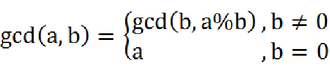
code:
1 | int gcd(int a,int b){return b == 0 ? a,gcd(b,a % b);} |
时间复杂度为$log$级别。
最小公倍数
$lcm=n \times m / gcd(n,m)$
证明：从质因数分解思考
拓展欧几里得
code：
1 | int exgcd(int a,int b,int &x,int &y) |
数据结构
单调栈
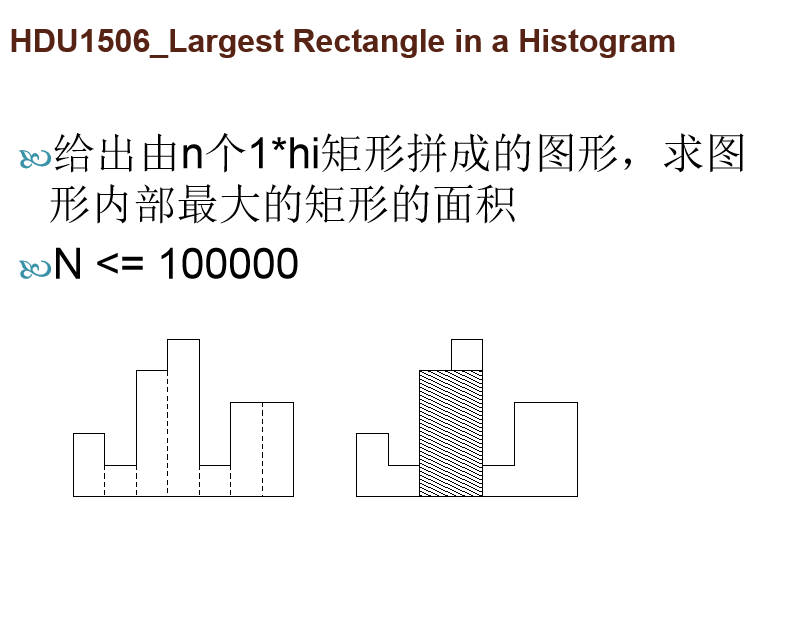
单调队列
单调队列必须满足从队头到队尾的严格单调性。
排在队列前面的比排在队列后面的要先进队。
一般用于优化动态规划等
例题：
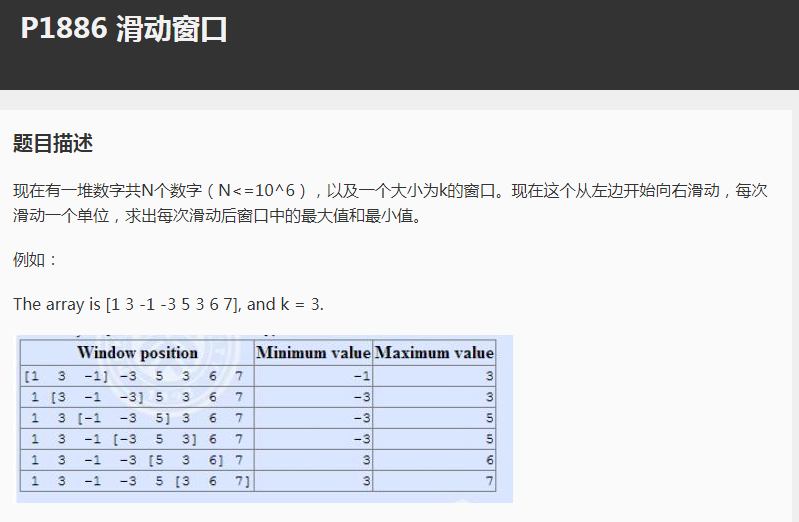
code:
1 |
|
莫队
$O(nsqrt(n)\times 修改复杂度)$的分治算法，只需要问题满足支持快速单点插入和快速单点删除就行了
例题：
1 |
|
堆
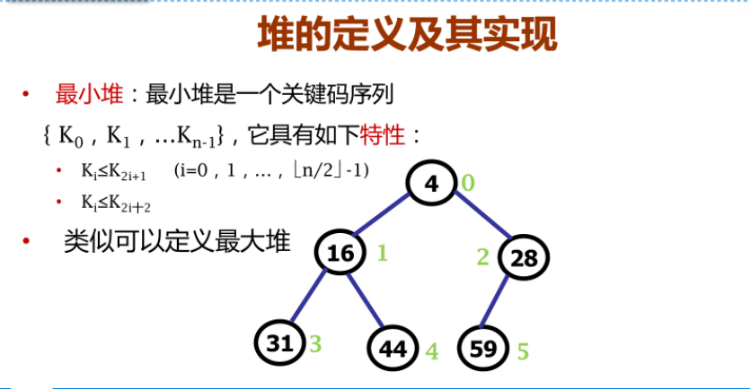
由于我们有priority_queue,所以手写堆就可以歇着了……
二叉搜索树
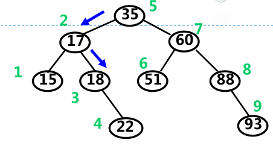
大概就是这样了
由于这东西对于竞赛没什么用（太好卡了，还是去用平衡树吧……），所以不说什么了。
线段树
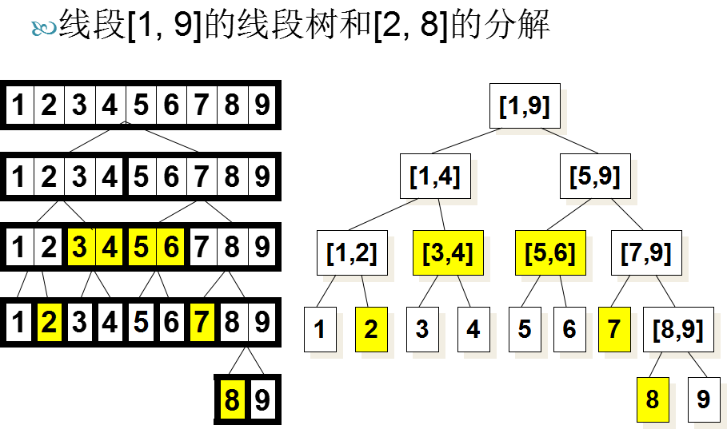
额…… 对于线段树自我感觉良好，不说废话了qwq。
树链剖分
大多数情况下（没有特别说明时），“树链剖分”都指“重链剖分”，我们所讲的也是“重链剖分”。
重链剖分可以将树上的任意一条路径划分成不超过O(logn) 条连续的链，每条链上的点深度互不相同（即是自底向上的一条链，链上所有点的lca为链的一个端点）。
重链剖分还能保证划分出的每条链上的节点 dfs 序连续，因此可以方便地用一些维护序列的数据结构（如线段树）来维护树上路径的信息。
1.修改 树上两点之间的路径上 所有点的值。
2.查询 树上两点之间的路径上 节点权值的 和/极值/其它（在序列上可以用数据结构维护，便于合并的信息） 。
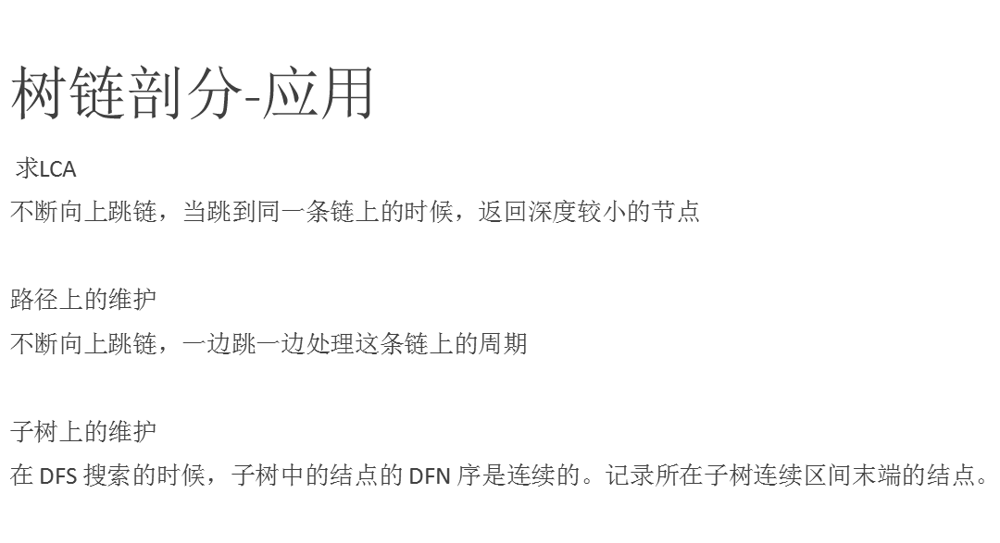
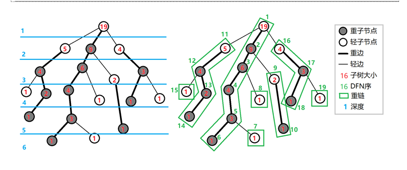
求LCA
如果两个节点不在同一条链上，将所在链链首深度大的点跳链。当在同一条链时，深度小的点的位置就是lca。
一次跳过一条链，速度比倍增快。
用线段树维护区间值
考虑到树链剖分后每一个链的元素的dfs序是连续的，所以我们可以用线段树取维护树链剖分后的序列。
例题：
ZJOI2008 树的统计
对一棵有n个节点，节点带权值的静态树，进行三种操作共q 次：
- 修改单个节点的值；
- 查询u到u的路径上的最大值；
- 查询v到v的路径上的权值和。
1 |
|
树状数组
他死了
ST表
倍增做法：
预处理出f[i][j]表示从i开始，连续2^j个中的最小值
对比
线段树：需要区间可合并
树状数组：需要区间可合并，并满足区间减法，不支持区间修改（min,max不满足区间减法）
ST算法：需要区间可合并，不支持修改
- 线段树的要求最少，但代码最多
- 线段树适用范围最广，但速度最慢
图论
有向无环图&拓扑排序
不存在环的有向图被称为有向无环图（ Directed Acyclic Graph）
在有向无环图上，我们可以对节点进行排序，生成一个线性序列，使得：如果节点i在该有向无环图上可以沿着有向边到达节点j，那么节点i在线性序列中的位置一定在节点j之前
生成线性序列的过程被称为拓扑排序
有向图 G 可以进行拓扑排序 等价于 有向图G是有向无环图
拓扑排序的简单应用：给出有向无环图G和一个点S，求S到G上其它所有点的路径的方案数
例题 P1347排序
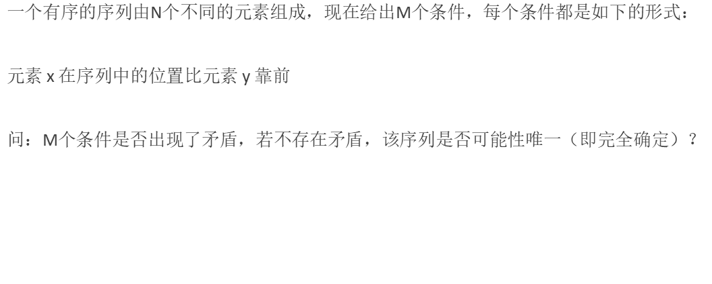
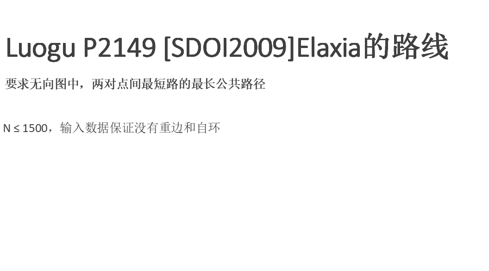
https://www.luogu.org/problemnew/show/P2047
https://www.luogu.org/problemnew/show/P2966
缩点
强联通分量
强连通的定义：有向图 G 强连通是指，G 中任意两个结点连通。
强连通分量（Strongly Connected Components，SCC）的定义是：极大的强连通子图
强连通分量+缩点+DGA上的动态规划是解决一系列有向图问题通用方法
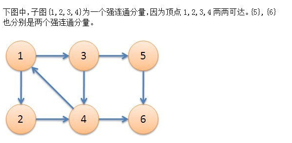
tarjan
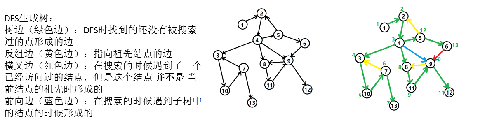
如果结点u是某个强连通分量在搜索树中遇到的第一个结点，那么这个强连通分量的其余结点肯定是在搜索树中以u为根的子树中。u被称为这个强连通分量的根。这一点我们可以用反证法证明，即如果一个和u在同一个强联通分量中的点不在以遇到的第一个节点u的子树中，那么它一定比u先被搜索到。
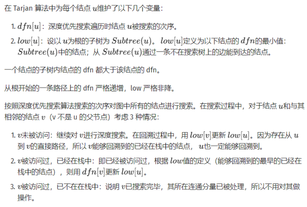
code：
1 | //https://www.luogu.org/problemnew/show/P3387 |
Kosaraju算法
另一个比tarjan更好理解的求强联通分量的算法。
Kosaraju 算法依靠两次简单的 DFS 实现。
第一次 DFS，选取任意顶点作为起点，遍历所有为访问过的顶点，并在回溯之前给顶点编号，也就是后序遍历。
第二次 DFS，对于反向后的图，以标号最大的顶点作为起点开始 DFS。这样遍历到的顶点集合就是一个强连通分量。对于所有未访问过的结点，选取标号最大的，重复上述过程。
两次 DFS 结束后，强连通分量就找出来了
证明： 如果点A在连正向边时可以到达点B，点A在连反向边时也能到达点B，那么我们就可以判断，点A和点B是可以互相到达的。
code：
1 | void positive_dfs(int pos){ |
推荐习题：https://www.luogu.org/problemnew/show/P1262
二分图
定义&性质
- 节点由两个集合组成，且两个集合内部没有边的无向图
- 重要性质：二分图不包括奇环。可用来做二分图的判定
匈牙利算法
求最大匹配
每次寻找增广路径，都可以使得匹配数+1
因此，不断递归寻找可能存在的增广路径，就可以得到二分图的最大匹配
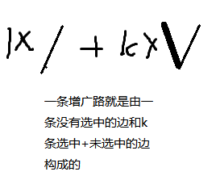
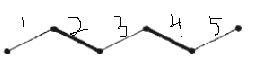
如图，这就是一条增广路，粗边为选中的边。我们可以发现，对于一条增广路，如果我们删掉选中的边，加入未选的边，边数（匹配数）就会加1。
查分约束
差分约束系统：由N个变量X_1, X_2, X_3 …. X_N和M个未知条件组成的N元一次不等式组，其中，每个条件都形如
X_i <= X_j + c_k
我们的问题是：给出一组满足所有条件的解，否则判断出无解
注意到，X_i <= X_j + c_k 与单源最短路中的三角不等式很相似，建立N个节点对应N个变量。对于每组条件，从 j 向i连一条边。同时虚构0号节点并向每一个节点连一条边，如果存在负环则无解。否则有解。
最近公共祖先
考虑到一步一步跳太慢，我们考虑有没有快一点的跳法
设fa[i][j] 表示节点i 的第2^j 个祖先是谁，fa[x][i] 可以预处理得到
考虑如何对朴素算法进行优化：
1。 调整到同一高度
2。 一起同时往上跳
略微占空间，并不是最优的LCA算法
code:
1 |
|
贪心
基本思想
贪心是一种解题策略，更多是一种解题思想
使用贪心方法需要注意局部最优与全局最优的关系（用于区分贪心和动态规划），选择当前状态的局部最优并不一定能推导出问题的全局最优
利用贪心策略解题，需要解决两个问题：
该题是否适合于用贪心策略求解。
如何选择贪心标准，以得到问题的最优解 。
贪心问题的特点
可以通过局部的贪心选择来达到问题的全局最优解，运用贪心策略解题，一般来说需要一步步的进行多次的贪心选择。在经过一次贪心选择后，原问题将变成一个相似的，但规模更小的问题，之后的每一步都是当前看似最佳的选择，且每一个选择都仅做一次。
原问题的最优解包含子问题的最优解，即具有最优子结构的性质，但并不是所有具有最优子结构的问题都可以用贪心策略求解。
分治
思想
分治分治，分而治之，分治算法就是将一个大问题划分为几个更小规模的形式相同的子问题并加以解决，通过解决子问题最后解决总问题。
分治算法在OI中的运用主要在两个方面
二分查找、三分查找、二分答案
直接考察分治
二分答案
常见于最小值最大或者最大值最小问题（基本上可以把这看做二分答案的标志）
要求：
如果答案确定，我们能够快速判断答案是否合法
答案具有可二分性，即如果答案为i是可行的，答案为i+1即可行
作用
牺牲log(n)的复杂度，把求最优化问题变成了一个判断是否可行的问题，有时候能够简化问题。关键在于转化后的问题更好求解。三分
三分的难度要略低于二分(因为扩展出来的形式少)
三分的用处在于求一个单峰函数的最值
单峰函数，例如：
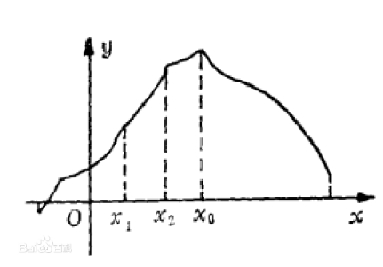
code:
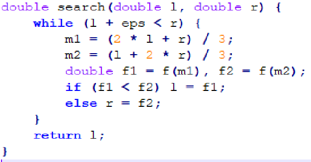
动态规划
一维线性DP
比较常见的一种动态规划问题，特点是状态只有一维
例题：
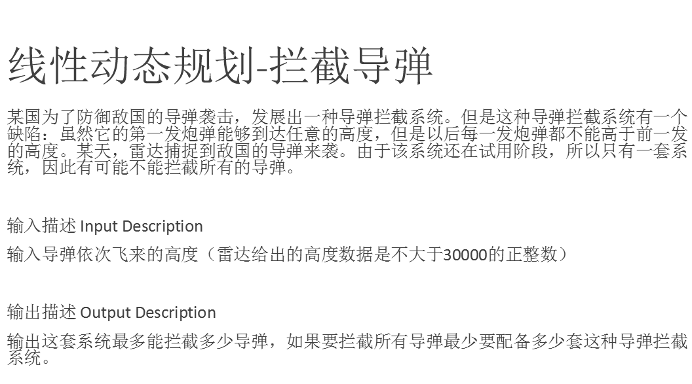
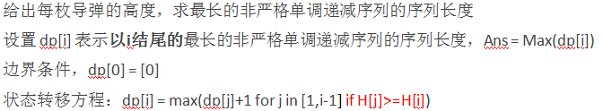
但是时间复杂度是$O(n^2)$。
优化：
记录f[x]为当前时刻dp值为x的所有元素中高度最高的一个，用单调栈去优化。
1 |
|
设d[i]为长度为n的错排的种类数，考虑构造一个错排序列。
$d[1] = 0$
$d[2] = 1$
$d[n]=(d[n-1] + d[n-2])*(n-1) (n >= 3)$
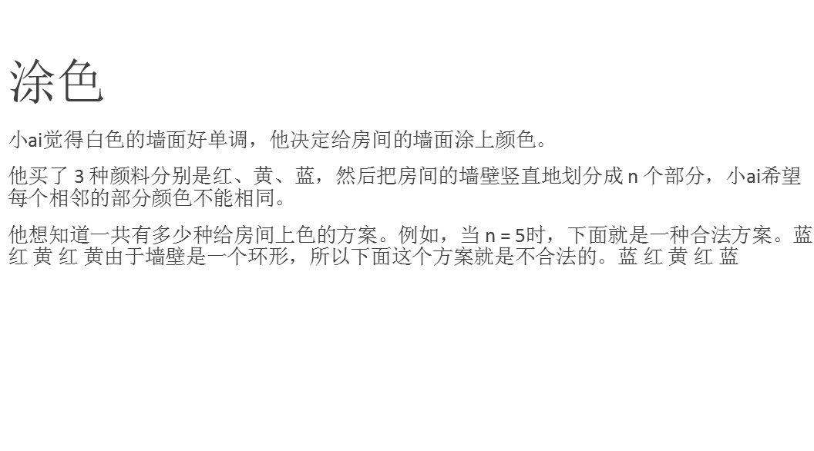
$f[n] = f[n-1] + f[n-2]*2$
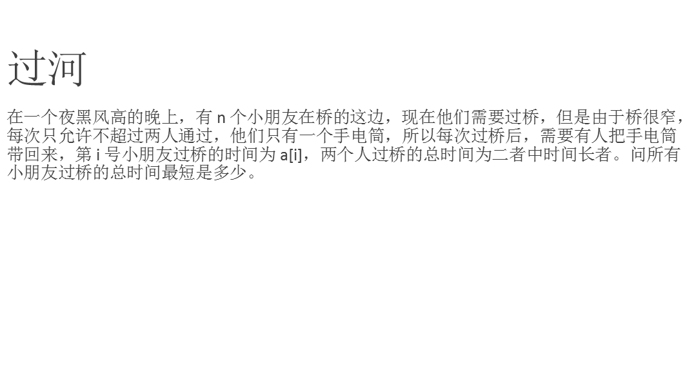
考虑这样几种情况：
运一个人：a[n] ： $t=a[1]+a[n]$
但这样不是最优的
若还剩a[n]和a[n-1]，则一个一个运：
$t=a[1]+a[n-1]+a[1]+a[n]$
但如果让a[n]和a[n-1]一起走，则：
$t=a[1]+a[n]+a[2]+a[2]$
所以我们有两种方案：
第一种
让过河时间最少的人过来送手电筒，然后带着你一起过河。
第二种
让过河时间最少的人过来送手电筒，然后你带着n-1号一起过河，此时手电筒在对岸，接着让过河时间第二少的人过来送手电筒，带着过河时间最少的人一起过河。
所以我们建立一个dp[i]来记录前i个人过河的最短时间。那么转换方程为
$$dp[i] = min(p[i - 1] + a[0] + a[i], dp[i -2] + a[0] + a[i] + 2 * a[1]);$$
背包问题
严格来说，背包问题并不是一个单独的问题，他是一系列比较类似的问题的总称
请注意，并非所有的背包问题都是动态规划问题
0-1背包
有N件物品和一个容量为V的背包。第i件物品的价格（即体积，下同）是w[i]，价值是c[i]。求解将哪些物品装入背包可使这些物品的费用总和不超过背包容量，且价值总和最大。
对于一个物品，只有两种情况
情况一: 第i件不放进去，这时所得价值为:$f[i-1][v]$
情况二: 第i件放进去，这时所得价值为：$f[i-1][v-c[i]]+w[i] $
状态转移方程为：$f[i][v] = max(f[i-1][v], f[i-1][v-w[i]]+c[i])$
最终的答案是 $Max(f[N][j] for\ j \ in [0,maxV])$
code:
1 | int f[100005]; |
完全背包
N件物品和一个容量为V的背包。第i种物品的价格（即体积，下同）是w[i]，价值是c[i]，每种物品有无限多个。求解将哪些物品装入背包可使这些物品的费用总和不超过背包容量，且价值总和最大。
完全背包和01背包十分相像， 区别就是完全背包物品有无限件。由之前的选或者不选转变成了选或者不选，选几件。
用f[i][j]表示前i种背包装入容量为j的背包中所可以获得的最大价值
对于一种物品，只有两种情况
情况一: 第i件不放进去，这时所得价值为:$f[i-1][v]$
情况二: 第i件放进去，这时，我们需要枚举放进去多少件，设为K，所得价值为：$f[i-1][v-Kc[i]]+Kw[i] $
状态转移方程为：$f[i][v] = max(f[i-1][v-Kw[i]]+Kc[i]) 0<=K<=v/w[i]$
最终的答案是 $Max(f[N][j] for \ j \ in [0,maxV])$
code:
1 | for(int i = 1; i <= n; i++) |
多重背包
有N件物品和一个容量为V的背包。第i种物品的价格（即体积，下同）是w[i]，价值是c[i]，第i种物品最多有n[i]件可用。求解将哪些物品装入背包可使这些物品的费用总和不超过背包容量，且价值总和最大。
用f[i][j]表示前i种背包装入容量为j的背包中所可以获得的最大价值
对于一种物品，只有两种情况
情况一: 第i件不放进去，这时所得价值为:$f[i-1][v]$
情况二: 第i件放进去，这时，我们需要枚举放进去多少件，设为K，所得价值为：$f[i-1][v-Kc[i]]+Kw[i]$
状态转移方程为：$f[i][v] = max(f[i-1][v-Kw[i]]+Kc[i]) 0<=K<=v/w[i]，K<= n[i]$
最终的答案是 $Max(f[N][j] for \ j \ in [0,maxV])$
那么，这样做的时间复杂度是多少呢？
$O(nW\sum k_i)$
轻松TLE没商量。
所以我们要对此进行二进制分解优化，处理后我们可以把多重背包转化成 0-1 背包模型来求解。
为了表述方便，我们用$A_{i,j}$表示第$i$种物品拆分出的第$j$个物品。
我们令$A_{i,j}$ 表示由$2^j$的单个物品组合成的一个更大的物品。如果$k_i+1$不是2的整数次幂，就需要再添加一个物品，该物品由二进制分解后剩余的物品组成。
举个例子：
- $6=1+2+3$
- $8=1+2+4+1$
- $18=1+2+4+8+3$
- $31=1+2+4+8+16$
显然，通过上述拆分方式，可以表示任意 $\leq k$个物品的等效选择方式。将每种物品按照上述方式拆分后，使用 0-1 背包的方法解决即可。
时间复杂度$O(nW\sum log \ k_i)$
code:
1 | index = 0; |
分组背包
有N件物品和一个容量为V的背包。第i件物品的价格（即体积，下同）是w[i]，价值是c[i]。这N个物品分成了若干个组，每个组里面的商品不可以同时选择。
求解将哪些物品装入背包可使这些物品的费用总和不超过背包容量，且价值总和最大。
code:
1 | for(int i=1;i<=N;i++){ |
树形DP
这个地方是真的听懵了……
以后再填坑吧……
例题1：
树上的动态规划如何写状态函数，怎么转移？
一般来说，绝大多数树上的一个节点i的状态函数都是对于以该点为根的子树的状态的概括。
好处：边界条件清晰（叶节点），无后效性，子树内部的具体情况与外界无关
以本题为例子：
总活跃指数最大（整棵树的活跃指数最大） —- 子树的活跃指数最大是多少？
code:
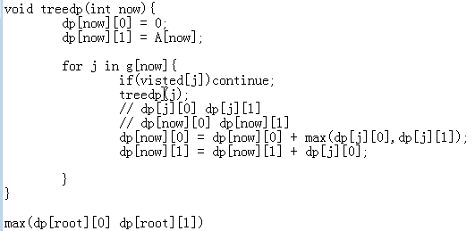
基环树
思路：先找到环，环以外的部分正常的树dp做，然后考虑断环
推荐习题 https://www.luogu.org/problemnew/show/P2607
状压DP
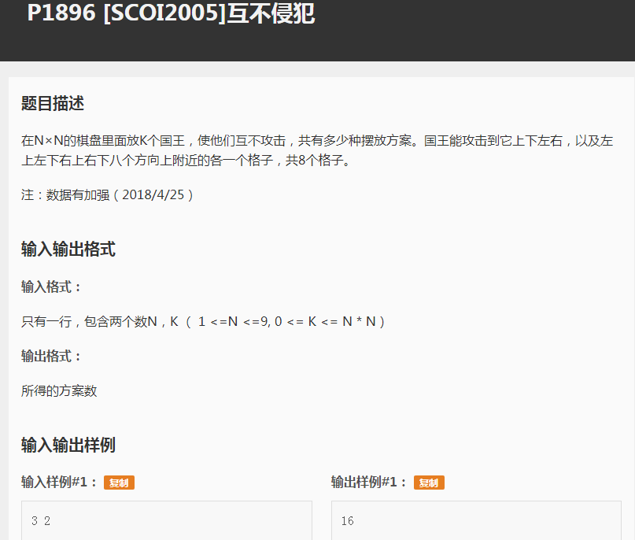
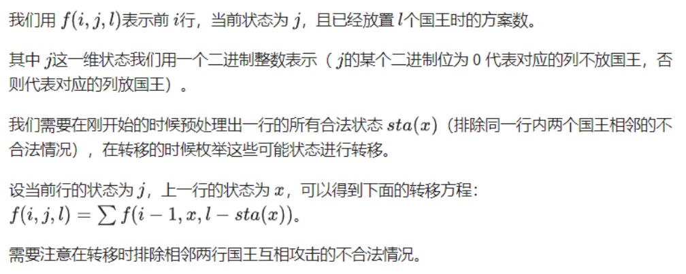
code:
1 |
|
数位DP
问题模型：给定两个很大的正整数 a,b, 求在[a,b]内有多少数字满足性质 xxxxx
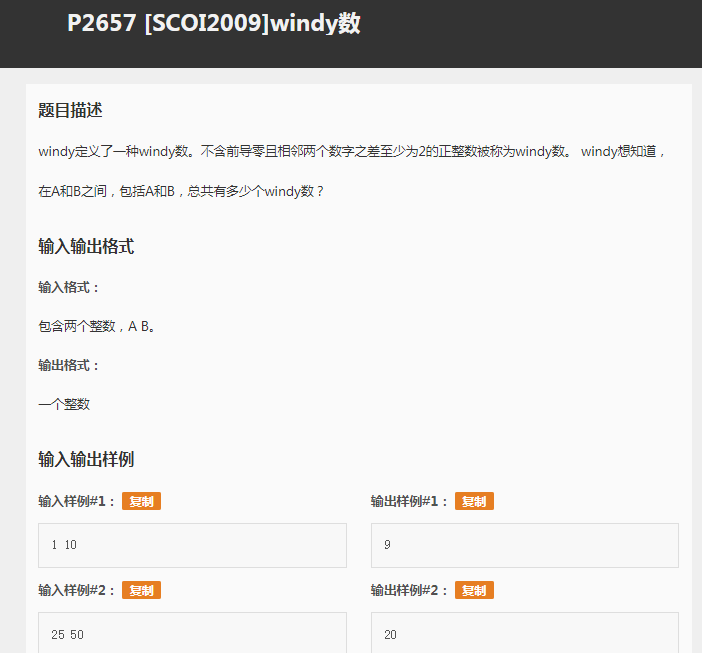
我们用f数组记录第i位以j开头的方案总数，然后累加就好了，这里就不详细说了（因为我真的不会……）。
code：
1 |
|
对拍
想要对拍，我们需要这样几个部分：
- 想要判断对错的代码
- 暴力代码
- 一个数据生成器
- 一个用来对拍的程序
我们以这个题为例
不确认对错的代码：
1 | #include <iostream> |
暴力代码：
1 |
|
数据生成器：
1 | #include <iostream> |
对拍程序：
1 | @echo off |